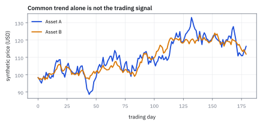
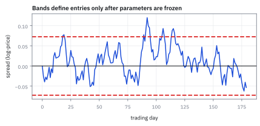

15.4 Pairs Trading and Cointegration
เทรดส่วนต่างของ log ราคาสองหุ้นได้ก็ต่อเมื่อมีหลักฐานว่าส่วนต่างถูกดึงกลับ และต้องรู้ว่ามันกลับช้าแค่ไหน ถี่แค่ไหน และหลักฐานจากข้อมูลหนึ่งปีอ่อนแค่ไหน
หุ้น A ราคา \$42 หุ้น B ราคา \$28 hedge ratio 1.15 spread ของ log ราคามีค่าเฉลี่ยระยะยาว −0.025 และ SD 0.032 และถูกดึงกลับด้วยความเร็ว 0.05 ต่อวัน ซึ่งให้ half-life 13.9 วัน วันนี้ spread ต่ำกว่าค่าเฉลี่ย 2.17 SD เทรดเดอร์เข้า long spread แล้วตั้ง time stop ไว้ 14 วัน “เพราะ half-life คือ 13.9 วัน” ตั้งถูกไหม?
ลองตอบก่อนเปิดเฉลย
ไม่ถูก half-life คือเวลาที่ระยะห่างหดเหลือครึ่ง ไม่ใช่เวลาที่ถึงเส้นออก ที่วันที่ 14 ค่าคาดหวังของ z เพิ่งมาอยู่ที่ −1.08 การถึงเส้นออก z = −0.5 ต้องใช้ราว 29.3 วัน stop 14 วันจึงปิดไม้กลางทาง ได้กำไรคาดหวังราว \$34,900 แทน \$69,366 ที่ตั้งเป้าไว้ และยังมีคำถามที่ใหญ่กว่า: ข้อมูลหนึ่งปีจับคู่ที่ดึงกลับจริงแบบนี้ได้เพียงราว 31% ของครั้ง
สิ่งที่เราจะสร้าง
15.1 ถึง 15.3 ถดถอยผลตอบแทนบนผลตอบแทน หน้านี้ถดถอยระดับ log ราคาบนระดับ log ราคา ซึ่งปกติเป็นสิ่งต้องห้าม (15.5 จะแสดงว่าทำไม) ยกเว้นกรณีเดียวคือราคาสองตัวผูกกันจนส่วนต่างถูกดึงกลับ เรียกว่า cointegration และนั่นคือสิ่งที่ pairs trade เดิมพัน
เราจะนิยาม spread แล้ววัดว่าวันนี้มันอยู่ห่างแค่ไหน ใช้ AR(1) หาว่ามันกลับช้าแค่ไหน เชื่อมกับ OU process ทดสอบ cointegration ด้วย Engle–Granger และวัดด้วยการจำลองว่าการทดสอบนี้จับคู่จริงได้บ่อยแค่ไหน จากนั้นแปลงเป็นจำนวนหุ้น กำไรเป้าหมาย จำนวนครั้งที่เข้าเทรดต่อปี และจุดตัดขาดทุน
ศัพท์ที่ใช้ในหัวข้อนี้
- Pairs trading
- ซื้อหุ้นหนึ่งและ short อีกหุ้นในสัดส่วนที่ตัดการขยับร่วมกันออก เหลือแต่เดิมพันว่าส่วนต่างจะกลับเข้าหาค่าเฉลี่ย
- Spread
- $\ln P_A-h\ln P_B$ ตัวเลขตัวเดียวที่ใช้ตัดสินเข้า ออก และตัดขาดทุน
- Stationary
- อนุกรมที่ค่าเฉลี่ยและความแปรปรวนไม่ไหลไปตามเวลา จึงมีระดับปกติให้วัดระยะห่าง ถ้าไม่ stationary ค่าเฉลี่ยในอดีตก็ไม่ใช่จุดที่มันจะกลับไป
- Cointegration
- ราคาสองตัวที่แต่ละตัวเดินสุ่มไม่มีที่สิ้นสุด แต่ผลรวมเชิงเส้นของ log ราคาตัวหนึ่ง stationary ใช้เป็นเหตุผลทางสถิติว่าส่วนต่างจะกลับ
- Unit root
- กรณี $\phi=1$ ของ AR(1) ซึ่งส่วนต่างเป็น random walk ไม่มีแรงดึงกลับ เป็นสมมติฐานที่การทดสอบพยายามปฏิเสธ
- Engle–Granger test
- ถดถอย log ราคาหนึ่งบนอีกตัวเพื่อหา $h$ แล้วทดสอบ unit root ใน residual ด้วย Dickey–Fuller ถ้าเพิ่ม lag ของผลต่างเข้าไปเรียกว่า Augmented Dickey–Fuller (ADF)
- Half-life
- จำนวนวันที่ระยะห่างจากค่าเฉลี่ยคาดว่าจะหดเหลือครึ่ง ใช้เลือกระยะเวลาถือ แต่ไม่ใช่เวลาที่ถึงเส้นออก
สัญลักษณ์และหน่วย
| สัญลักษณ์ | ความหมาย | หน่วย |
|---|---|---|
| $P_A,\ P_B$ | ราคาปิดของหุ้น A และ B | USD ต่อหุ้น |
| $h$ | hedge ratio: slope ของ $\ln P_A$ บน $\ln P_B$ | ไม่มีหน่วย |
| $s_t,\ \mu,\ \sigma_s$ | spread ค่าเฉลี่ยระยะยาว และ SD ของระดับ spread | หน่วย log ราคา |
| $z_t,\ d_t$ | ระยะห่างจากค่าเฉลี่ยในหน่วย SD และในหน่วย log ราคา | SD และหน่วย log ราคา |
| $\phi,\ \kappa$ | สัมประสิทธิ์ AR(1) รายวัน และความเร็วดึงกลับ $\phi=e^{-\kappa}$ | ไม่มีหน่วย และต่อวัน |
| $t_{1/2}$ | half-life | วันซื้อขาย |
| $V_A,\ V_B$ | มูลค่าขา long A และขา short B | USD |
| $e_t,\ \gamma$ | residual ของการถดถอย log ราคา และ $\phi-1$ ในการทดสอบ | หน่วย log ราคา และไม่มีหน่วย |
ขั้นที่ 1 — นิยาม spread จาก log ราคา
ก่อนเทรดส่วนต่าง ต้องตกลงว่า “ส่วนต่าง” คืออะไร ถ้าใช้ $P_A-P_B$ ตรง ๆ ส่วนต่างจะโตตามระดับราคา เกณฑ์ที่ตั้งปีที่แล้วใช้ไม่ได้ปีนี้ จึงสมมติว่าราคาสองตัวผูกกันแบบสัดส่วน แล้วดูว่าอะไรคงที่
ข้อสมมติทั้งหมดอยู่ในบรรทัดแรก log เปลี่ยนเลขชี้กำลัง $h$ ให้เป็นตัวคูณ และเปลี่ยนผลคูณเป็นผลบวก บรรทัดที่สามบอกว่าถ้าความสัมพันธ์จริงเป๊ะ ส่วนต่างนี้คงที่ไม่ว่าราคาจะโตไปเท่าไร ของจริงไม่เป๊ะ $s_t$ จึงแกว่งรอบค่าเฉลี่ย $\mu$ และสิ่งที่เดิมพันคือการแกว่งกลับ
$h$ ไม่ได้เดา มันคือ slope ของ $\ln P_A$ บน $\ln P_B$ จากเครื่องมือของ 15.1 จึงเป็นค่าประมาณที่มีความคลาดติดมาเสมอ
Figure 15.4a — ราคาสองตัวที่มี trend ร่วมกัน

ขั้นที่ 2 — วันนี้ spread อยู่ห่างค่าเฉลี่ยกี่ SD
โจทย์ให้อะไรมาบ้าง: $P_A=42$, $P_B=28$, $h=1.15$, $\mu=-0.025$, $\sigma_s=0.032$ ทั้งหมดประมาณจากช่วงข้อมูลที่จบก่อนวันนี้ กติกาที่ตั้งไว้ก่อนดูข้อมูล: เข้าเมื่อ $|z|\gt2$ ออกเมื่อ $|z|\lt0.5$
คำตอบ: spread อยู่ที่ −0.0944 ต่ำกว่าเส้นเข้า −0.089 หรือ $z\approx-2.17$ spread ต่ำเกินไปและเราอยากให้มันขึ้น การที่ $s=\ln P_A-h\ln P_B$ ขึ้นคือ A ขึ้นหรือ B ลง จึง long A และ short B ถ้านิยาม spread กลับด้านเป็น B เทียบ A เครื่องหมายจะกลับหมด อย่าท่องทิศ ให้ดูนิยามทุกครั้ง
ตรวจเองใน 10 วินาที: $-0.0944+0.025=-0.0694$ และ $0.0694/0.032\approx2.17$ ส่วนต่างที่ต้องเดินกลับถึงค่าเฉลี่ยคือ 0.0694 หน่วย log ราคา ตัวเลขนี้จะกลายเป็นกำไรเป้าหมายในขั้นที่ 7
Figure 15.4b — spread กับแถบ ±2 SD

ขั้นที่ 3 — กลับช้าแค่ไหน: half-life ไม่ใช่เวลาถึงเส้นออก
สัญญาณอย่างเดียวไม่พอ ต้องรู้ว่าจะกลับเร็วแค่ไหน เพราะเงินถูกผูกไว้และค่ายืมหุ้นเดินทุกวัน model ที่ง่ายที่สุดที่มีแรงดึงกลับคือ AR(1): ระยะห่างวันนี้เป็นสัดส่วน $\phi$ ของเมื่อวาน บวก shock ใหม่ ให้ $\phi=e^{-0.05}\approx0.9512$
บรรทัดที่สามได้จากการหาค่าคาดหวังของบรรทัดที่สองซ้ำทีละวัน shock หายไปเพราะค่าเฉลี่ยเป็นศูนย์ เหลือการคูณ $\phi$ ซ้ำ ๆ ถาม “กี่วันจึงเหลือครึ่ง” แล้วใส่ log ทั้งสองข้างเพื่อดึงเลขชี้กำลังลงมา ทั้งเศษและส่วนติดลบ ผลจึงเป็นบวก
แต่เราไม่ได้ออกที่ครึ่งทาง เราออกที่ $|z|=0.5$ ต้องหดจาก 2.17 เหลือ 0.5 คือเหลือ 23% ใช้ราว 29.3 วัน ที่วันที่ 14 ค่าคาดหวังของ z เพิ่งเป็น $-2.1677e^{-0.7}\approx-1.08$ นี่คือจุดที่ time stop 14 วันในโจทย์เปิดเรื่องพลาด
Figure 15.4c — half-life ตาม $\phi$

ขั้นที่ 4 — เชื่อมกับ OU process: SD ของ spread มาจากไหน
0.05 ต่อวันกับ 0.032 ไม่ได้เป็นอิสระต่อกัน ถ้ามองว่า spread เป็น OU process แบบ Vasicek ใน 13.4 ความเร็วดึงกลับกับขนาด shock จะกำหนด SD ระยะยาวให้ หาได้จากเงื่อนไขว่าใน stationary state ความแปรปรวนวันนี้เท่ากับเมื่อวาน
บรรทัดที่สามคือ variance ของบรรทัดที่สองในขั้นที่ 3 โดย $\eta_t$ อิสระจาก $d_{t-1}$ พจน์ไขว้จึงไม่มี บรรทัดที่ห้าคือความแปรปรวนของ shock ที่สะสมในหนึ่งวันจากคำตอบของ OU ใน 13.4 พอแทนลงไป $1-e^{-2\kappa}$ กับ $1-\phi^2$ เป็นตัวเดียวกันและตัดกัน
ถ้า shock ต่อเนื่องมี SD 1% ต่อวัน SD ระยะยาวคือ 0.0316 ใกล้ 0.032 ที่ใช้ กลับด้าน: SD 0.032 กับ $\phi=0.9512$ แปลว่า shock รายวันมี SD $0.032\sqrt{1-\phi^2}\approx0.00987$ ข้อสังเกตสำคัญคือ 0.032 เป็น SD ของระดับ spread ไม่ใช่ของการเปลี่ยนรายวัน
ขั้นที่ 5 — ทดสอบ cointegration: Engle–Granger และเกณฑ์ −3.37
ทุกอย่างข้างบนสมมติว่า spread ถูกดึงกลับจริง ถ้า $\phi=1$ spread เป็น random walk ค่าเฉลี่ยในอดีตไม่มีความหมาย และกลยุทธ์พัง Engle–Granger ทดสอบข้อนี้สองขั้น ขั้นแรกหา $h$ ด้วย OLS ของ log ราคา ขั้นที่สองถาม residual ว่ามีแรงดึงกลับหรือไม่
ลบ $e_{t-1}$ ออกทั้งสองข้างของบรรทัดที่สอง ได้บรรทัดที่สามที่เป็น regression ธรรมดาของ 15.1 ถ้า $\gamma=0$ คือ unit root ไม่มีแรงดึงกลับ ถ้า $\gamma\lt0$ ระยะห่างถูกดึงกลับทุกวัน ปฏิเสธ unit root เมื่อ $t_\gamma$ ต่ำกว่า −3.37 ADF เพิ่ม lag ของ $\Delta e$ เข้าไปรับ autocorrelation ที่เหลือ ส่วนโค้ดท้ายหน้าใช้แบบไม่มี lag
ทำไมไม่ใช้ −1.645 ของ t ธรรมดา? สองชั้น ภายใต้ unit root สถิติ $t$ ไม่ได้มี distribution แบบ Student t แต่เบ้ไปทางลบ และ $h$ ถูกเลือกด้วย OLS ให้ residual ดูนิ่งที่สุดอยู่แล้ว เกณฑ์จึงต้องเข้มขึ้น
การจำลองคู่ที่ spread เป็น random walk ไม่มีแรงดึงกลับ 2,000 คู่ คู่ละ 250 วัน ได้ $t_\gamma\lt-3.37$ เพียง 4.9% ตรงกับระดับ 5% ที่ตั้งใจ
ขั้นที่ 6 — ข้อมูลหนึ่งปีจับคู่จริงได้บ่อยแค่ไหน
โจทย์ให้อะไรมาบ้าง: จำลองคู่ที่ cointegrate จริงตามตัวเลขของหน้านี้: log ราคา B เป็น random walk ที่ก้าวรายวัน SD 2% log ราคา A คือ $-0.025+1.15\ln P_B+d_t$ โดย $d_t$ เป็น AR(1) ที่ $\phi=0.9512$ และ SD ระยะยาว 0.032 แล้วใช้การทดสอบของขั้นที่ 5 นับว่ากี่ครั้งที่ปฏิเสธ unit root (seed ตายตัวในโค้ดท้ายหน้า)
| ข้อมูล | จำนวนคู่ที่จำลอง | สัดส่วนที่ $t_\gamma\lt-3.37$ |
|---|---|---|
| คู่ที่ spread เป็น random walk 250 วัน | 2,000 | 4.9% |
| คู่จริง 250 วัน (ราวหนึ่งปี) | 2,000 | 30.7% |
| คู่จริง 500 วัน | 2,000 | 83.6% |
| คู่จริง 1,000 วัน | 1,000 | 100% |
คำตอบ: คู่ที่ดึงกลับจริงด้วย half-life 13.9 วัน ถูกจับได้จากข้อมูลหนึ่งปีเพียง 30.7% ของครั้ง อีกเกือบ 70% การทดสอบบอกว่า “ปฏิเสธ unit root ไม่ได้” ทั้งที่คู่นั้นดี การไม่ผ่านจึงไม่ได้แปลว่าไม่มี cointegration และการผ่านก็ยังเป็นแค่หลักฐานจากตัวอย่างเดิม ไม่ได้รับประกันอนาคต
ตรวจเองใน 10 วินาที: ความคลาดของการนับ 2,000 ครั้งที่ 5% คือราว $\sqrt{0.05(0.95)/2000}\approx0.5\%$ 4.9% จึงเข้ากับ 5% ส่วน 30.7% กับ 83.6% ห่างกันเกินความคลาดจากการสุ่มมาก ข้อมูลที่ยาวขึ้นช่วยจริง
Figure 15.4d — spread ที่นิ่ง เทียบกับ spread ที่ไหลหนี

ขั้นที่ 7 — ขนาดสองขา กำไรเป้าหมาย และทำไมขาต้องไม่เท่ากัน
ขาของ B ต้องใหญ่กว่า A เท่าไรกำไรจึงขึ้นกับ spread อย่างเดียว? ใช้ว่ากำไรของแต่ละขาประมาณได้ด้วยมูลค่าคูณการเปลี่ยนของ log ราคา เมื่อการขยับไม่ใหญ่ (1.10) long A มูลค่า $V_A$ short B มูลค่า $V_B$
ใส่ $V_B=hV_A$ ลงในบรรทัดแรก ได้ $V_A(\Delta\ln P_A-h\Delta\ln P_B)$ ซึ่งคือ $V_A\Delta s$ ตามนิยามขั้นที่ 1 ตลาดจะขึ้นหรือลงก็ไม่เข้าบัญชี ขอแค่ spread เดิน พอร์ตนี้ short มากกว่า long \$150,000 ในหน่วยเงิน แต่ไม่มี exposure ต่อระดับราคาของ B การทำให้เงินสองขาเท่ากันจะผิด
ลองกับราคาจริง: ถ้า spread กลับถึงค่าเฉลี่ยผ่าน A ขาเดียว A ต้องขึ้นไป $42e^{0.069366}\approx45.02$ ได้ \$71,829 ถ้าผ่าน B ขาเดียว B ต้องลงไป $28e^{-0.069366/1.15}\approx26.36$ ได้ \$67,314 ตัวเลขเส้นตรง \$69,366 อยู่ระหว่างกลาง เพราะผลตอบแทนแบบ simple กับแบบ log ต่างกัน เทียบกับ gross \$2.15 ล้าน คือราว 3.23%
ขั้นที่ 8 — ปีหนึ่งเข้าเทรดได้กี่ครั้ง: วันที่เลยเส้นไม่ใช่จำนวนสัญญาณ
ถ้า z เป็น Normal มาตรฐาน วันที่ $|z|\gt2$ มีสัดส่วน 4.55% ของปี คนมักคูณด้วย 252 แล้วเรียกว่า 11 สัญญาณต่อปี แต่วันติดกันมี correlation $\phi=0.951$ วันที่เลยเส้นจึงมาเป็นกลุ่ม สิ่งที่นับได้จริงคือจำนวนครั้งที่ spread ข้ามจากในแถบออกไปนอกแถบ
บรรทัดที่สี่มาจาก 8.7: เมื่อรู้ว่าเมื่อวาน $z_{t-1}=u$ ค่าวันนี้เป็น Normal ที่ค่าเฉลี่ย $\phi u$ และ SD $\sqrt{1-\phi^2}$ โอกาสที่จะต่ำกว่า −2 จึงเป็น $\Phi$ ของก้อนในวงเล็บ แล้วเฉลี่ยทุกค่า $u$ ที่เมื่อวานยังอยู่ในแถบ integral นี้ไม่มีสูตรปิด โค้ดท้ายหน้าใช้ Simpson คำนวณ คูณ 2 เพราะมีทั้งฝั่งบนและล่าง
ผลคือราว 3.35 ครั้งต่อปี ไม่ใช่ 11 แต่ละครั้งอยู่นอกแถบเฉลี่ย $11.5/3.35\approx3.4$ วัน ถ้าทุกไม้ได้ 3.23% ของ gross ตามขั้นที่ 7 ปีหนึ่งได้ราว $3.35\times3.23\%\approx10.8\%$ ก่อนต้นทุนและก่อนนับไม้ที่ขาดทุน ไม่ใช่ 28% ที่ได้จากการนับ 252 หารด้วย 29 วัน
ขั้นที่ 9 — ตั้งจุดตัดขาดทุนก่อนเข้า ไม่ใช่หลังขาดทุน
ฉากที่กลยุทธ์นี้ตายคือ spread กว้างขึ้นแทนที่จะแคบลง เพราะความสัมพันธ์ขาด เช่นมีข่าวควบรวมหรือหุ้นตัวหนึ่งเปลี่ยนธุรกิจ ต้องตั้งทั้งจุดตัดราคาและจุดตัดเวลาไว้ก่อนส่งคำสั่ง
ถ้า z วิ่งจาก −2.17 ไป −4 ขาดทุน \$58,634 คือ 84.5% ของกำไรที่หวัง ถ้า spread เป็น Normal นิ่งจริง $|z|\gt4$ เกิดราววันละ $6\times10^{-5}$ พอมันเกิดขึ้น คำอธิบายที่น่าจะกว่าคือความสัมพันธ์ขาดแล้ว ไม่ใช่โชคร้าย จึงตัดทิ้ง
จุดตัดเวลา 40 วันราวสามเท่าของ half-life ตอนนั้น model คาดว่า z ควรอยู่ที่ −0.29 เลยเส้นออกไปแล้ว ถ้ายังค้างอยู่ model น่าจะผิด และค่ายืมหุ้นเดินทุกวัน ส่วนขนาดต่อคู่ที่นิยมจำกัดไว้ราว 2% ของ NAV เป็นนโยบายของโต๊ะ ไม่ได้มาจากสูตร เพื่อให้คู่หนึ่งพังแล้วกองไม่ล้ม
คำถามที่ควรถามออกมาดัง ๆ
เลือกคู่จาก correlation สูงไม่ได้หรือ? correlation วัดการขยับรายวันของผลตอบแทน cointegration วัดว่าระดับของส่วนต่างถูกดึงกลับ Figure 15.4d มีสองคู่ที่การขยับรายวันต่างกันแค่ 0.0012 แต่คู่หนึ่งหนีไป 6 SD ใน 160 วัน ถ้าลากต่อถึง 250 วันจะหนีไป $0.0012(250)/0.032\approx9.4$ SD คู่ที่ correlation สูงจึงอาจไม่ cointegrate และคู่ที่ cointegrate อาจมี correlation รายวันไม่สูงนัก
สลับให้ B อยู่ซ้ายของ regression ได้ไหม? ได้ แต่ $h$ ที่ได้ไม่ใช่ $1/1.15$ พอดี ด้วยเหตุผลเดียวกับการถดถอยกลับด้านใน 15.1 spread ใหม่มีนิยามต่างไป และผลทดสอบอาจต่างกันเล็กน้อย ต้องเลือกด้านไว้ก่อนดูผล ไม่ใช่ลองทั้งสองด้านแล้วเลือกด้านที่ผ่าน
ความผิดที่ทำให้กลยุทธ์ดูดีกว่าความจริง
ใช้ half-life เป็น time stop: ที่วันที่ 14 ค่าคาดหวังของ z คือ −1.08 spread เพิ่งเดินได้ $(2.168-1.076)(0.032)\approx0.0349$ หน่วย ปิดไม้ตรงนั้นได้ราว \$34,900 ครึ่งหนึ่งของเป้า \$69,366 ทุกไม้ backtest ที่ตั้ง stop แบบนี้จะดูเหมือนกลยุทธ์อ่อน ทั้งที่ปัญหาอยู่ที่กติกา
ลงเงินสองขาเท่ากัน: long A \$1 ล้าน short B \$1 ล้าน กำไรจะเป็น $V_A\Delta s+0.15V_A\Delta\ln P_B$ ถ้า B ขึ้น 10% โดย spread ไม่ขยับ พอร์ตได้ราว $1{,}000{,}000(0.15)(0.0953)\approx\$14{,}300$ จากการเดิมพันทิศทางของ B ที่ไม่ได้ตั้งใจ ถ้า B ลงก็เสียเท่ากัน
นับ 11 สัญญาณต่อปี: ขั้นที่ 8 แสดงว่าได้ราว 3.35 ครั้ง ประมาณการกำไรต่อปีที่นับวันเกินเส้นเป็นสัญญาณจะสูงเกินจริงราวสามเท่า ยังไม่นับ bid–ask ค่าธรรมเนียม ค่ายืมหุ้น และการถูกเรียกหุ้นคืนกลางทาง
ใช้ทำอะไรบนโต๊ะจริง
โต๊ะ statistical arbitrage ใช้ขั้นตอนนี้กับคู่ที่มีเหตุผลทางธุรกิจว่าควรผูกกัน เช่นบริษัทในธุรกิจเดียวกัน หุ้นสองชั้นของบริษัทเดียวกัน หรือ ETF กับตะกร้าหุ้นข้างใน ลำดับงานคือประมาณ $h$ บนช่วงข้อมูลหนึ่ง ทดสอบ residual ตรึงค่าเฉลี่ย SD เส้นเข้า เส้นออก จุดตัดราคาและเวลา แล้วค่อยเทรดในช่วงถัดไปที่ไม่ได้ใช้ประมาณ และทบทวนทุกค่าเป็นระยะ
สามโจทย์ตรวจความเข้าใจ
1. ถ้าวันนี้ A ราคา \$44 และ B ยัง \$28 ควรเข้าเทรดไหม
เฉลย
$s=\ln44-1.15\ln28=3.784190-3.832035\approx-0.047846$ และ $z=(-0.047846+0.025)/0.032\approx-0.71$ ยังอยู่ในแถบ ±2 จึงไม่เข้า
2. ถ้าประมาณ $\phi$ ได้ 0.98 ต่อวันแทน 0.9512 half-life และเวลาถึงเส้นออกจาก $z=-2.168$ เป็นเท่าไร
เฉลย
$t_{1/2}=\ln0.5/\ln0.98\approx34.3$ วัน และ $t_{\rm exit}=\ln(2.1677/0.5)/(-\ln0.98)\approx1.4667/0.0202\approx72.6$ วัน ช้ากว่าเดิมราว 2.5 เท่า ทั้งที่ $\phi$ ต่างกันแค่ 0.029 เงินถูกผูกนานขึ้นและค่ายืมหุ้นแพงขึ้นตาม
3. ถ้าลงขา A \$3 ล้าน ต้อง short B กี่หุ้น และกำไรเป้าหมายแบบเส้นตรงเป็นเท่าไร
เฉลย
ขา B คือ $1.15\times3=\$3.45$ ล้าน ซื้อ A $3{,}000{,}000/42\approx71{,}429$ หุ้น short B $3{,}450{,}000/28\approx123{,}214$ หุ้น กำไรเป้าหมาย $3{,}000{,}000(0.069366)\approx\$208{,}097$ สามเท่าของเดิมพอดี เพราะทุกอย่างเป็นเส้นตรงใน $V_A$
คำนวณซ้ำด้วย JavaScript
รันใน Node.js ได้โดยไม่ต้องติดตั้งอะไร โค้ดคำนวณ spread, z, half-life, เวลาถึงเส้นออก, ขนาดสองขา, กำไรเป้าหมายทั้งแบบเส้นตรงและแบบราคาจริง, จำนวนครั้งที่เข้าเทรดต่อปีด้วย Simpson และจำลองการทดสอบ Engle–Granger ด้วย seed ตายตัวตามตารางขั้นที่ 6 ตรวจว่าราคาและความเร็วเป็นบวก และข้อมูลยาวพอ ใช้เวลารันราวหนึ่งวินาที
function positive(...values) {
if (!values.every(v => Number.isFinite(v) && v > 0)) throw new RangeError('Prices, sizes and speeds must be positive numbers');
}
// Spread of log prices, and how many standard deviations it sits from its long-run mean.
function spreadZ(priceA, priceB, h, mean, sd) {
positive(priceA, priceB, h, sd);
if (!Number.isFinite(mean)) throw new TypeError('Mean must be a finite number');
const s = Math.log(priceA) - h * Math.log(priceB);
return {s, z: (s - mean) / sd};
}
// AR(1) with coefficient phi = exp(-kappa): expected deviation shrinks by phi each day.
function reversion(kappa) {
positive(kappa);
const phi = Math.exp(-kappa);
return {phi, halfLife: Math.log(0.5) / Math.log(phi), daysTo: (z0, z1) => Math.log(Math.abs(z0 / z1)) / kappa};
}
function legs(valueA, h, priceA, priceB) {
positive(valueA, h, priceA, priceB);
const valueB = h * valueA;
return {valueB, sharesA: Math.round(valueA / priceA), sharesB: Math.round(valueB / priceB), gross: valueA + valueB, net: valueA - valueB};
}
const {exp, sqrt, log, sin, cos, imul, PI} = Math; // local names: hot loops below avoid global lookups
const phiN = x => exp(-x * x / 2) / sqrt(2 * PI);
function simpson(f, lo, hi, n = 4000) {
const w = (hi - lo) / n;
let sum = 0;
for (let i = 0; i <= n; i++) sum += (i === 0 || i === n ? 1 : i % 2 ? 4 : 2) * f(lo + i * w);
return sum * w / 3;
}
const Phi = x => Math.abs(x) > 10 ? (x > 0 ? 1 : 0) : 0.5 + Math.sign(x) * simpson(phiN, 0, Math.abs(x), 400);
// Days per year beyond +-z, and separate entries per year: P(inside yesterday, beyond today) for an AR(1) with corr rho.
function signalCount(z, rho, days) {
if (!(z > 0) || !(Math.abs(rho) < 1) || !(days > 0)) throw new RangeError('Need z > 0, |rho| < 1 and a positive day count');
const tail = 2 * Phi(-z);
const crossOneSide = simpson(z1 => phiN(z1) * Phi((-z - rho * z1) / sqrt(1 - rho * rho)), -z, 10, 4000);
return {tail, daysBeyond: days * tail, entries: 2 * days * crossOneSide, daysPerEpisode: tail / (2 * crossOneSide)};
}
// Seeded standard normals (mulberry32 + Box-Muller).
function normals(seed) {
let a = seed >>> 0, spare = null;
const u = () => {
a = (a + 0x6D2B79F5) >>> 0;
let t = imul(a ^ (a >>> 15), a | 1);
t ^= t + imul(t ^ (t >>> 7), t | 61);
return (((t ^ (t >>> 14)) >>> 0) + 0.5) / 4294967296;
};
return () => {
if (spare !== null) { const q = spare; spare = null; return q; }
const r = sqrt(-2 * log(u())), q = 2 * PI * u();
spare = r * sin(q);
return r * cos(q);
};
}
// Engle-Granger: OLS of log A on log B, then a Dickey-Fuller regression of the residual's change on its lagged level.
function engleGranger(logA, logB) {
if (!Array.isArray(logA) || !Array.isArray(logB) || logA.length !== logB.length || logA.length < 20) {
throw new RangeError('Need two log-price series of the same length, at least 20 days');
}
if (![...logA, ...logB].every(Number.isFinite)) throw new TypeError('Log prices must be finite');
const n = logA.length, ma = logA.reduce((s, v) => s + v, 0) / n, mb = logB.reduce((s, v) => s + v, 0) / n;
let sxy = 0, sxx = 0;
for (let t = 0; t < n; t++) { sxy += (logB[t] - mb) * (logA[t] - ma); sxx += (logB[t] - mb) ** 2; }
const h = sxy / sxx, c = ma - h * mb, e = logA.map((v, t) => v - c - h * logB[t]);
let num = 0, den = 0;
for (let t = 1; t < n; t++) { num += e[t - 1] * (e[t] - e[t - 1]); den += e[t - 1] ** 2; }
const gamma = num / den;
let ss = 0;
for (let t = 1; t < n; t++) ss += (e[t] - e[t - 1] - gamma * e[t - 1]) ** 2;
return {h, gamma, t: gamma / Math.sqrt(ss / (n - 2) / den)};
}
// Share of simulated pairs whose Engle-Granger t falls below the critical value.
function egPower(runs, days, phi, seed, critical = -3.37) {
if (!Number.isInteger(runs) || runs < 100 || !Number.isInteger(days) || days < 20) throw new RangeError('Use at least 100 runs of at least 20 days');
if (!(phi > 0 && phi <= 1)) throw new RangeError('phi must lie in (0, 1]');
const z = normals(seed), sd = 0.032, step = phi < 1 ? sd * Math.sqrt(1 - phi * phi) : 0.00987;
let reject = 0;
for (let k = 0; k < runs; k++) {
let lb = Math.log(28), x = phi < 1 ? sd * z() : 0;
const la = [], lbs = [];
for (let t = 0; t < days; t++) {
lb += 0.02 * z(); x = phi * x + step * z();
lbs.push(lb); la.push(-0.025 + 1.15 * lb + x);
}
if (engleGranger(la, lbs).t < critical) reject++;
}
return reject / runs;
}
const today = spreadZ(42, 28, 1.15, -0.025, 0.032), rev = reversion(0.05), book = legs(1e6, 1.15, 42, 28);
const gap = -0.025 - today.s, upA = 42 * Math.exp(gap), downB = 28 * Math.exp(-gap / 1.15);
console.log(JSON.stringify({
today, bands: {entry: -0.025 - 2 * 0.032, exit: -0.025 - 0.5 * 0.032},
reversion: {phi: rev.phi, halfLife: rev.halfLife, toExit: rev.daysTo(today.z, -0.5), zAt14: today.z * Math.exp(-0.05 * 14),
zAt40: today.z * Math.exp(-0.05 * 40)},
stationarySD: {ou: Math.sqrt(0.01 ** 2 / (2 * 0.05)), innovation: 0.032 * Math.sqrt(1 - rev.phi ** 2)},
book, target: {linear: 1e6 * gap, share: 1e6 * gap / book.gross, onlyA: book.sharesA * (upA - 42), priceA: upA,
onlyB: book.sharesB * (28 - downB), priceB: downB},
stop: {moveInSpread: (-4 - today.z) * 0.032, loss: 1e6 * (4 + today.z) * 0.032},
signals: signalCount(2, rev.phi, 252),
power: {days250: egPower(2000, 250, rev.phi, 7), days500: egPower(2000, 500, rev.phi, 8),
days1000: egPower(1000, 1000, rev.phi, 9), noPair250: egPower(2000, 250, 1, 10)},
exercises: {priceA44: spreadZ(44, 28, 1.15, -0.025, 0.032), slow: {halfLife: Math.log(0.5) / Math.log(0.98),
toExit: Math.log(Math.abs(today.z / 0.5)) / -Math.log(0.98)}, big: {...legs(3e6, 1.15, 42, 28), target: 3e6 * gap}}
}));ที่มาที่ไป
กลางทศวรรษ 1980 ทีมของ Nunzio Tartaglia ที่ Morgan Stanley ทำ pairs trading ด้วยคอมพิวเตอร์เป็นกลุ่มแรก ๆ ส่วนเครื่องมือทางสถิติมาทีหลัง Clive Granger รู้มานานว่าการถดถอยระดับของสองอนุกรมที่เดินสุ่มให้ผลหลอกได้ (15.5) และในปี 1987 เขากับ Robert Engle ตีพิมพ์วิธีแยกกรณีที่สองอนุกรมผูกกันจริงออกมา โดยใช้การทดสอบ unit root ของ Dickey และ Fuller (1979) กับ residual ทั้งคู่ได้รางวัลโนเบลปี 2003 Granger จากงาน cointegration และ Engle จากงาน ARCH ที่บทที่ 16 จะใช้
ข้อจำกัด: วิธีนี้สมมติอะไร และของจริงเป็นอย่างไร
| เรื่อง | วิธีนี้สมมติว่า | ของจริง | ผลเวลาใช้งาน |
|---|---|---|---|
| ความสัมพันธ์ | ส่วนต่างถูกดึงกลับตลอดไป | ควบรวม เปลี่ยนธุรกิจ หรือเปลี่ยนดัชนี ทำให้ความสัมพันธ์ขาดถาวรได้ | ถือรอในคู่ที่ขาดแล้วคือขาดทุนไม่จำกัด ต้องมีจุดตัดราคาและเวลา |
| ค่าประมาณ | $h$, $\mu$, $\sigma_s$ และ $\phi$ คงที่ | ทั้งหมดเปลี่ยนตามเวลา และประมาณจากข้อมูลหนึ่งปีได้ไม่แม่น | สัญญาณที่คำนวณจากค่าเก่าอาจผิดทั้งชุด |
| หลักฐาน | การทดสอบแยกคู่ดีกับคู่เสียได้ | ข้อมูลหนึ่งปีจับคู่จริงได้ราว 31% ของครั้ง | ทั้งพลาดคู่ดี และถ้าลองหลายคู่ก็จะเจอคู่เสียที่ผ่านโดยบังเอิญ (15.5) |
| การ short | ยืมหุ้นมา short ได้ตลอดในราคาคงที่ | ค่ายืมแพงขึ้นได้ และอาจถูกเรียกคืน | ต้นทุนจริงสูงกว่าที่คำนวณ และอาจถูกบังคับปิดไม้ในจังหวะที่แย่ที่สุด |
สิ่งที่ควรตอบได้หลังอ่าน
- spread คือ $\ln P_A-h\ln P_B$ วันนี้ −0.0944 หรือ $z=-2.17$ จึง long A short B
- half-life 13.9 วันคือเวลาหดครึ่ง การถึงเส้นออก $z=-0.5$ ใช้ราว 29.3 วัน
- ขา B ต้องเป็น $h$ เท่าของขา A กำไรจึงเป็น $V_A\Delta s$ เป้าหมาย \$69,366 และพอร์ตไม่เท่ากันในหน่วยเงินโดยตั้งใจ
- Engle–Granger ใช้เกณฑ์ −3.37 และข้อมูลหนึ่งปีจับคู่จริงได้เพียงราว 31% ของครั้ง
- วันที่เลยเส้น 11.5 วันต่อปีรวมเป็นการเข้าเทรดราว 3.35 ครั้ง ไม่ใช่ 11 ครั้ง
15.5 อธิบายว่าทำไมการถดถอยระดับราคาบนระดับราคาที่ไม่ cointegrate ให้ $R^2$ สูงและ $t$ ใหญ่ได้แม้สองตัวไม่เกี่ยวกันเลย และทำไมการลองหลายแบบแล้วเลือกผู้ชนะหลอกเราได้ง่าย